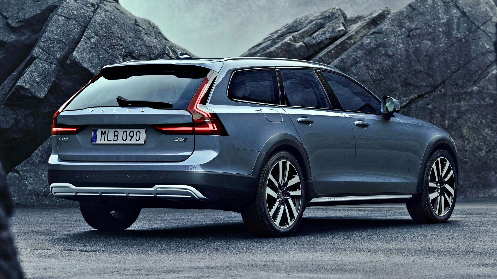
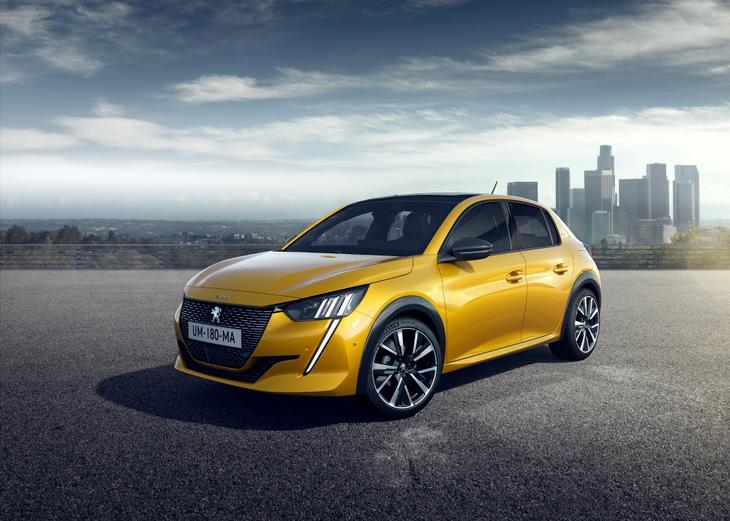
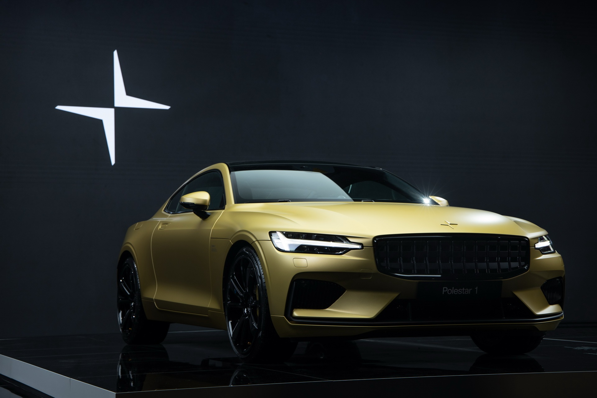

Motoryzacja
Volvo S/V90
Peugeot 208
Polestar 1

Volvo S/V90
Samochód został po raz pierwszy oficjalnie zaprezentowany podczas targów motoryzacyjnych w Genewie w marcu 2016 roku. Nazwa V90 w latach 1990 - 1998 używana już była w nomenklaturze Volvo jako oznaczenie poprzednika modelu S80. Auto zbudowane zostało na bazie płyty podłogowej SPA (Scalable Product Architecture), która wykorzystana została do stworzenia drugiej generacji modelu XC90. Samochód zaprojektowany został przez Thomasa Ingenlatha[1]. Pierwszy pokaz pojazdu miał miejsce 18 lutego 2016 roku.
Na górę

Peugeot 208
został zaprezentowany po raz pierwszy podczas Międzynarodowego Salonu Samochodowego w Genewie w 2012 roku. Pojazd zastąpił w ofercie model 207 produkowany od 2006 roku. Na tle poprzednika, 208 zyskało inne, bardziej krągłe proporcje nadwozia. To właśnie w tym modelu po raz pierwszy zastosowano też awangardowy projekt deski rozdzielczej wyróżniający się wysuniętymi zegarami względem kierownicy – tzw. i-Cockpit. Samochód trafił do sprzedaży w połowie 2012 roku.
Na górę

Polestar 1
Jest to pierwszy w historii pojazd opracowany przez utworzoną w 2017 roku markę samochodów Polestar. Samochód został po raz pierwszy oficjalnie zaprezentowany 17 października 2017 roku. Pod względem stylistycznym auto czerpie inspirację z koncepcyjnego modelu Volvo Concept Coupé. Pierwszy w historii marki Polestar pojazd powstał na zmodernizowanej platformie SPA wspóldzielonej zarówno z pojazdami Volvo, jak i Geely. Jego nadwozie w dużej mierze wykonano z włókna węglowego, dzięki czemu jest o 45% sztywniejsze.
Na górę
Powrót